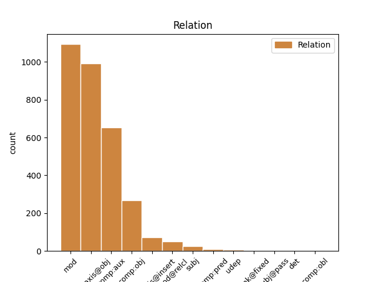
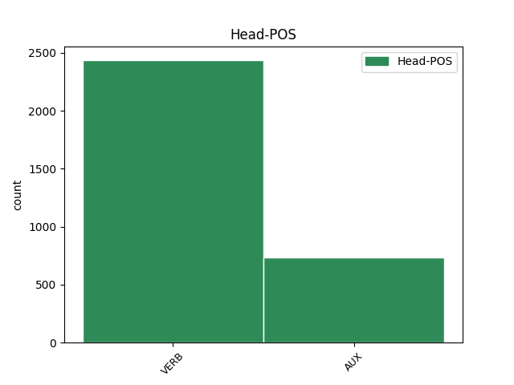
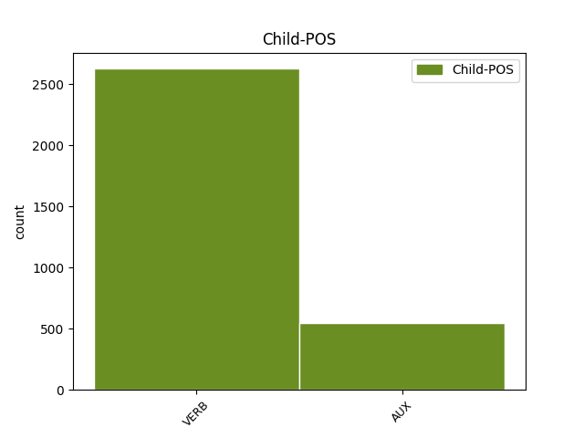

Distribution of features within this leaf



Agreement Rules sorted by frequency.
- When the dependent token is the modifer(mod) of the head token, and the dependent token is VERB.
1 Gdy _ _ _ _ 0 _ _ _
2 żandarm _ _ _ _ 0 _ _ _
3 wrócił wrócić VERB praet:sg:m1:perf Animacy=Hum|Aspect=Perf|Gender=Masc|Mood=Ind|Number=Sing|Tense=Past|VerbForm=Fin|Voice=Act 10 mod _ _
4 z _ _ _ _ 0 _ _ _
5 posiłkami _ _ _ _ 0 _ _ _
6 . _ _ _ _ 0 _ _ _
7 . _ _ _ _ 0 _ _ _
8 . _ _ _ _ 0 _ _ _
9 pan _ _ _ _ 0 _ _ _
10 zniknął zniknąć VERB praet:sg:m1:perf Animacy=Hum|Aspect=Perf|Gender=Masc|Mood=Ind|Number=Sing|Tense=Past|VerbForm=Fin|Voice=Act 0 _ _ _
11 . _ _ _ _ 0 _ _ _
1 - _ _ _ _ 0 _ _ _
2 Twoja _ _ _ _ 0 _ _ _
3 głowa _ _ _ _ 0 _ _ _
4 wygląda wyglądać VERB fin:sg:ter:imperf Aspect=Imp|Mood=Ind|Number=Sing|Person=3|Tense=Pres|VerbForm=Fin|Voice=Act 7 parataxis@obj _ _
5 strasznie _ _ _ _ 0 _ _ _
6 - _ _ _ _ 0 _ _ _
7 stwierdza stwierdzać VERB fin:sg:ter:imperf Aspect=Imp|Mood=Ind|Number=Sing|Person=3|Tense=Pres|VerbForm=Fin|Voice=Act 0 _ _ _
8 . _ _ _ _ 0 _ _ _
1 Nie _ _ _ _ 0 _ _ _
2 wiem _ _ _ _ 0 _ _ _
3 co _ _ _ _ 0 _ _ _
4 piję _ _ _ _ 0 _ _ _
5 , _ _ _ _ 0 _ _ _
6 ale _ _ _ _ 0 _ _ _
7 jeśli _ _ _ _ 0 _ _ _
8 to to AUX pred Mood=Ind|Tense=Pres|VerbForm=Fin|VerbType=Quasi 9 comp:aux _ _
9 jest być AUX fin:sg:ter:imperf Aspect=Imp|Mood=Ind|Number=Sing|Person=3|Tense=Pres|VerbForm=Fin|Voice=Act 0 _ _ _
10 miłość _ _ _ _ 0 _ _ _
11 . _ _ _ _ 0 _ _ _
12 . _ _ _ _ 0 _ _ _
13 . _ _ _ _ 0 _ _ _
14 dolej _ _ _ _ 0 _ _ _
15 mi _ _ _ _ 0 _ _ _
16 jeszcze _ _ _ _ 0 _ _ _
17 . _ _ _ _ 0 _ _ _
1 Nie _ _ _ _ 0 _ _ _
2 wiem wiedzieć VERB fin:sg:pri:imperf Aspect=Imp|Mood=Ind|Number=Sing|Person=1|Tense=Pres|VerbForm=Fin|Voice=Act 0 _ _ _
3 co _ _ _ _ 0 _ _ _
4 piję pić VERB fin:sg:pri:imperf Aspect=Imp|Mood=Ind|Number=Sing|Person=1|Tense=Pres|VerbForm=Fin|Voice=Act 2 comp:obj _ SpaceAfter=No
5 , _ _ _ _ 0 _ _ _
6 ale _ _ _ _ 0 _ _ _
7 jeśli _ _ _ _ 0 _ _ _
8 to _ _ _ _ 0 _ _ _
9 jest _ _ _ _ 0 _ _ _
10 miłość _ _ _ _ 0 _ _ _
11 . _ _ _ _ 0 _ _ _
12 . _ _ _ _ 0 _ _ _
13 . _ _ _ _ 0 _ _ _
14 dolej _ _ _ _ 0 _ _ _
15 mi _ _ _ _ 0 _ _ _
16 jeszcze _ _ _ _ 0 _ _ _
17 . _ _ _ _ 0 _ _ _
1 A _ _ _ _ 0 _ _ _
2 jednak _ _ _ _ 0 _ _ _
3 - _ _ _ _ 0 _ _ _
4 myślał _ _ _ _ 0 _ _ _
5 - _ _ _ _ 0 _ _ _
6 jeżeli _ _ _ _ 0 _ _ _
7 będę _ _ _ _ 0 _ _ _
8 mógł _ _ _ _ 0 _ _ _
9 umrzeć _ _ _ _ 0 _ _ _
10 , _ _ _ _ 0 _ _ _
11 mówiąc mówić VERB pcon:imperf Aspect=Imp|Tense=Pres|VerbForm=Conv|Voice=Act 0 _ _ _
12 : _ _ _ _ 0 _ _ _
13 " _ _ _ _ 0 _ _ _
14 Życie _ _ _ _ 0 _ _ _
15 jest być AUX fin:sg:ter:imperf Aspect=Imp|Mood=Ind|Number=Sing|Person=3|Tense=Pres|VerbForm=Fin|Voice=Act 11 parataxis@obj _ _
16 takie _ _ _ _ 0 _ _ _
17 piękne _ _ _ _ 0 _ _ _
18 " _ _ _ _ 0 _ _ _
19 , _ _ _ _ 0 _ _ _
20 to _ _ _ _ 0 _ _ _
21 nic _ _ _ _ 0 _ _ _
22 poza _ _ _ _ 0 _ _ _
23 tym _ _ _ _ 0 _ _ _
24 nie _ _ _ _ 0 _ _ _
25 jest _ _ _ _ 0 _ _ _
26 istotne _ _ _ _ 0 _ _ _
27 . _ _ _ _ 0 _ _ _
1 Jeśli _ _ _ _ 0 _ _ _
2 chodzi _ _ _ _ 0 _ _ _
3 o _ _ _ _ 0 _ _ _
4 politykę _ _ _ _ 0 _ _ _
5 migracyjną _ _ _ _ 0 _ _ _
6 , _ _ _ _ 0 _ _ _
7 to _ _ _ _ 0 _ _ _
8 dla _ _ _ _ 0 _ _ _
9 Europy _ _ _ _ 0 _ _ _
10 nie _ _ _ _ 0 _ _ _
11 do _ _ _ _ 0 _ _ _
12 pomyślenia _ _ _ _ 0 _ _ _
13 jest być AUX fin:sg:ter:imperf Aspect=Imp|Mood=Ind|Number=Sing|Person=3|Tense=Pres|VerbForm=Fin|Voice=Act 0 _ _ _
14 — _ _ _ _ 0 _ _ _
15 większość _ _ _ _ 0 _ _ _
16 z _ _ _ _ 0 _ _ _
17 jej _ _ _ _ 0 _ _ _
18 państw _ _ _ _ 0 _ _ _
19 należy należeć VERB fin:sg:ter:imperf Aspect=Imp|Mood=Ind|Number=Sing|Person=3|Tense=Pres|VerbForm=Fin|Voice=Act 13 parataxis@insert _ _
20 do _ _ _ _ 0 _ _ _
21 strefy _ _ _ _ 0 _ _ _
22 Schengen _ _ _ _ 0 _ _ _
23 , _ _ _ _ 0 _ _ _
24 która _ _ _ _ 0 _ _ _
25 opiera _ _ _ _ 0 _ _ _
26 się _ _ _ _ 0 _ _ _
27 na _ _ _ _ 0 _ _ _
28 swobodnym _ _ _ _ 0 _ _ _
29 przepływie _ _ _ _ 0 _ _ _
30 osób _ _ _ _ 0 _ _ _
31 i _ _ _ _ 0 _ _ _
32 towarów _ _ _ _ 0 _ _ _
33 — _ _ _ _ 0 _ _ _
34 aby _ _ _ _ 0 _ _ _
35 podążać _ _ _ _ 0 _ _ _
36 dalej _ _ _ _ 0 _ _ _
37 bez _ _ _ _ 0 _ _ _
38 wypracowania _ _ _ _ 0 _ _ _
39 powszechnych _ _ _ _ 0 _ _ _
40 zasad _ _ _ _ 0 _ _ _
41 ustanawiających _ _ _ _ 0 _ _ _
42 wspólną _ _ _ _ 0 _ _ _
43 politykę _ _ _ _ 0 _ _ _
44 imigracyjną _ _ _ _ 0 _ _ _
45 . _ _ _ _ 0 _ _ _
1 Chodzi chodzić VERB fin:sg:ter:imperf Aspect=Imp|Mood=Ind|Number=Sing|Person=3|Tense=Pres|VerbForm=Fin|Voice=Act 0 _ _ _
2 tu _ _ _ _ 0 _ _ _
3 o _ _ _ _ 0 _ _ _
4 obszary _ _ _ _ 0 _ _ _
5 polityki _ _ _ _ 0 _ _ _
6 obejmujące _ _ _ _ 0 _ _ _
7 wsparcie _ _ _ _ 0 _ _ _
8 , _ _ _ _ 0 _ _ _
9 opiekę _ _ _ _ 0 _ _ _
10 i _ _ _ _ 0 _ _ _
11 edukację _ _ _ _ 0 _ _ _
12 , _ _ _ _ 0 _ _ _
13 co _ _ _ _ 0 _ _ _
14 może móc VERB fin:sg:ter:imperf Aspect=Imp|Mood=Ind|Number=Sing|Person=3|Tense=Pres|VerbForm=Fin|Voice=Act 1 mod@relcl _ _
15 wydawać _ _ _ _ 0 _ _ _
16 się _ _ _ _ 0 _ _ _
17 nieco _ _ _ _ 0 _ _ _
18 paradoksalne _ _ _ _ 0 _ _ _
19 w _ _ _ _ 0 _ _ _
20 kontekście _ _ _ _ 0 _ _ _
21 zagadnienia _ _ _ _ 0 _ _ _
22 dotyczącego _ _ _ _ 0 _ _ _
23 w _ _ _ _ 0 _ _ _
24 rzeczywistości _ _ _ _ 0 _ _ _
25 intymności _ _ _ _ 0 _ _ _
26 par _ _ _ _ 0 _ _ _
27 i _ _ _ _ 0 _ _ _
28 rodziny _ _ _ _ 0 _ _ _
29 . _ _ _ _ 0 _ _ _
1 Teraz _ _ _ _ 0 _ _ _
2 zobaczymy zobaczyć VERB fin:pl:pri:perf Aspect=Perf|Mood=Ind|Number=Plur|Person=1|Tense=Fut|VerbForm=Fin|Voice=Act 0 _ _ _
3 , _ _ _ _ 0 _ _ _
4 kto _ _ _ _ 0 _ _ _
5 się _ _ _ _ 0 _ _ _
6 będzie być AUX bedzie:sg:ter:imperf Aspect=Imp|Mood=Ind|Number=Sing|Person=3|Tense=Fut|VerbForm=Fin 2 comp:obj _ _
7 śmiał _ _ _ _ 0 _ _ _
8 . _ _ _ _ 0 _ _ _
1 Oto oto VERB pred Mood=Ind|Tense=Pres|VerbForm=Fin|VerbType=Quasi 0 _ _ _
2 , _ _ _ _ 0 _ _ _
3 co _ _ _ _ 0 _ _ _
4 się _ _ _ _ 0 _ _ _
5 dzieje dziać VERB fin:sg:ter:imperf Aspect=Imp|Mood=Ind|Number=Sing|Person=3|Tense=Pres|VerbForm=Fin|Voice=Act 1 subj _ SpaceAfter=No
6 , _ _ _ _ 0 _ _ _
7 gdy _ _ _ _ 0 _ _ _
8 wystawia _ _ _ _ 0 _ _ _
9 się _ _ _ _ 0 _ _ _
10 nas _ _ _ _ 0 _ _ _
11 na _ _ _ _ 0 _ _ _
12 ryzyko _ _ _ _ 0 _ _ _
13 . _ _ _ _ 0 _ _ _
1 Brak brak VERB pred Mood=Ind|Tense=Pres|VerbForm=Fin|VerbType=Quasi 2 comp:aux _ _
2 jest być AUX fin:sg:ter:imperf Aspect=Imp|Mood=Ind|Number=Sing|Person=3|Tense=Pres|VerbForm=Fin|Voice=Act 0 _ _ _
3 doświadczeń _ _ _ _ 0 _ _ _
4 klinicznych _ _ _ _ 0 _ _ _
5 u _ _ _ _ 0 _ _ _
6 pacjentów _ _ _ _ 0 _ _ _
7 z _ _ _ _ 0 _ _ _
8 ciężkim _ _ _ _ 0 _ _ _
9 zaburzeniem _ _ _ _ 0 _ _ _
10 czynności _ _ _ _ 0 _ _ _
11 wątroby _ _ _ _ 0 _ _ _
12 . _ _ _ _ 0 _ _ _
1 Gdy _ _ _ _ 0 _ _ _
2 Arka _ _ _ _ 0 _ _ _
3 została zostać AUX praet:sg:f:perf Aspect=Perf|Gender=Fem|Mood=Ind|Number=Sing|Tense=Past|VerbForm=Fin|Voice=Act 6 comp:pred _ _
4 ukończona _ _ _ _ 0 _ _ _
5 Bóg _ _ _ _ 0 _ _ _
6 zesłał zesłać VERB praet:sg:m1:perf Animacy=Hum|Aspect=Perf|Gender=Masc|Mood=Ind|Number=Sing|Tense=Past|VerbForm=Fin|Voice=Act 0 _ _ _
7 na _ _ _ _ 0 _ _ _
8 ziemię _ _ _ _ 0 _ _ _
9 wielki _ _ _ _ 0 _ _ _
10 potop _ _ _ _ 0 _ _ _
11 , _ _ _ _ 0 _ _ _
12 nieustanny _ _ _ _ 0 _ _ _
13 deszcz _ _ _ _ 0 _ _ _
14 podniósł _ _ _ _ 0 _ _ _
15 poziom _ _ _ _ 0 _ _ _
16 wody _ _ _ _ 0 _ _ _
17 tak _ _ _ _ 0 _ _ _
18 że _ _ _ _ 0 _ _ _
19 zakryła _ _ _ _ 0 _ _ _
20 ona _ _ _ _ 0 _ _ _
21 nawet _ _ _ _ 0 _ _ _
22 najwyższe _ _ _ _ 0 _ _ _
23 góry _ _ _ _ 0 _ _ _
24 . _ _ _ _ 0 _ _ _
1 Coś _ _ _ _ 0 _ _ _
2 , _ _ _ _ 0 _ _ _
3 co _ _ _ _ 0 _ _ _
4 może móc VERB fin:sg:ter:imperf Aspect=Imp|Mood=Ind|Number=Sing|Person=3|Tense=Pres|VerbForm=Fin|Voice=Act 0 _ _ _
5 kopać _ _ _ _ 0 _ _ _
6 , _ _ _ _ 0 _ _ _
7 kiedy _ _ _ _ 0 _ _ _
8 jest być AUX fin:sg:ter:imperf Aspect=Imp|Mood=Ind|Number=Sing|Person=3|Tense=Pres|VerbForm=Fin|Voice=Act 4 udep _ _
9 zły _ _ _ _ 0 _ _ _
10 . _ _ _ _ 0 _ _ _
1 - _ _ _ _ 0 _ _ _
2 Ktokolwiek _ _ _ _ 0 _ _ _
3 to _ _ _ _ 0 _ _ _
4 był być AUX praet:sg:m1:imperf Animacy=Hum|Aspect=Imp|Gender=Masc|Mood=Ind|Number=Sing|Tense=Past|VerbForm=Fin|Voice=Act 6 subj _ SpaceAfter=No
5 , _ _ _ _ 0 _ _ _
6 przestał przestać VERB praet:sg:m1:perf Animacy=Hum|Aspect=Perf|Gender=Masc|Mood=Ind|Number=Sing|Tense=Past|VerbForm=Fin|Voice=Act 0 _ _ _
7 mi _ _ _ _ 0 _ _ _
8 wyglądać _ _ _ _ 0 _ _ _
9 na _ _ _ _ 0 _ _ _
10 Monikę _ _ _ _ 0 _ _ _
11 , _ _ _ _ 0 _ _ _
12 a _ _ _ _ 0 _ _ _
13 tym _ _ _ _ 0 _ _ _
14 bardziej _ _ _ _ 0 _ _ _
15 na _ _ _ _ 0 _ _ _
16 kandydatkę _ _ _ _ 0 _ _ _
17 na _ _ _ _ 0 _ _ _
18 niańkę _ _ _ _ 0 _ _ _
19 . _ _ _ _ 0 _ _ _
1 Konkurencja _ _ _ _ 0 _ _ _
2 skutkuje skutkować VERB fin:sg:ter:imperf Aspect=Imp|Mood=Ind|Number=Sing|Person=3|Tense=Pres|VerbForm=Fin|Voice=Act 0 _ _ _
3 niższymi _ _ _ _ 0 _ _ _
4 cenami _ _ _ _ 0 _ _ _
5 , _ _ _ _ 0 _ _ _
6 lepszą _ _ _ _ 0 _ _ _
7 jakością _ _ _ _ 0 _ _ _
8 usług _ _ _ _ 0 _ _ _
9 i _ _ _ _ 0 _ _ _
10 większym _ _ _ _ 0 _ _ _
11 wyborem _ _ _ _ 0 _ _ _
12 , _ _ _ _ 0 _ _ _
13 dzięki _ _ _ _ 0 _ _ _
14 czemu _ _ _ _ 0 _ _ _
15 konsumenci _ _ _ _ 0 _ _ _
16 są być AUX fin:pl:ter:imperf Aspect=Imp|Mood=Ind|Number=Plur|Person=3|Tense=Pres|VerbForm=Fin|Voice=Act 2 mod@relcl _ _
17 na _ _ _ _ 0 _ _ _
18 wygranej _ _ _ _ 0 _ _ _
19 pozycji _ _ _ _ 0 _ _ _
20 . _ _ _ _ 0 _ _ _
1 - _ _ _ _ 0 _ _ _
2 Tak _ _ _ _ 0 _ _ _
3 ? _ _ _ _ 0 _ _ _
4 - _ _ _ _ 0 _ _ _
5 zdziwił _ _ _ _ 0 _ _ _
6 się _ _ _ _ 0 _ _ _
7 naczelnik _ _ _ _ 0 _ _ _
8 i _ _ _ _ 0 _ _ _
9 otworzył _ _ _ _ 0 _ _ _
10 notatnik _ _ _ _ 0 _ _ _
11 na _ _ _ _ 0 _ _ _
12 chybił chybić VERB praet:sg:m1:perf Animacy=Hum|Aspect=Perf|Gender=Masc|Mood=Ind|Number=Sing|Tense=Past|VerbForm=Fin|Voice=Act 0 _ _ _
13 trafił trafić VERB praet:sg:m1:perf Animacy=Hum|Aspect=Perf|Gender=Masc|Mood=Ind|Number=Sing|Tense=Past|VerbForm=Fin|Voice=Act 12 unk@fixed _ SpaceAfter=No
14 . _ _ _ _ 0 _ _ _
1 Idąc _ _ _ _ 0 _ _ _
2 przez _ _ _ _ 0 _ _ _
3 galerię _ _ _ _ 0 _ _ _
4 , _ _ _ _ 0 _ _ _
5 milczeli _ _ _ _ 0 _ _ _
6 , _ _ _ _ 0 _ _ _
7 ale _ _ _ _ 0 _ _ _
8 za _ _ _ _ 0 _ _ _
9 zakrętem _ _ _ _ 0 _ _ _
10 , _ _ _ _ 0 _ _ _
11 gdy _ _ _ _ 0 _ _ _
12 wiadomo _ _ _ _ 0 _ _ _
13 było być AUX praet:sg:n:imperf Aspect=Imp|Gender=Neut|Mood=Ind|Number=Sing|Tense=Past|VerbForm=Fin|Voice=Act 21 mod _ SpaceAfter=No
14 , _ _ _ _ 0 _ _ _
15 że _ _ _ _ 0 _ _ _
16 ich _ _ _ _ 0 _ _ _
17 nie _ _ _ _ 0 _ _ _
18 widać _ _ _ _ 0 _ _ _
19 , _ _ _ _ 0 _ _ _
20 Wawrzak _ _ _ _ 0 _ _ _
21 złapał złapać VERB praet:sg:m1:perf Animacy=Hum|Aspect=Perf|Gender=Masc|Mood=Ind|Number=Sing|Tense=Past|VerbForm=Fin|Voice=Act 0 _ _ _
22 nagle _ _ _ _ 0 _ _ _
23 Kamińskiego _ _ _ _ 0 _ _ _
24 za _ _ _ _ 0 _ _ _
25 rękę _ _ _ _ 0 _ _ _
26 . _ _ _ _ 0 _ _ _
Disagree Examples:
1 Podążał podążać VERB praet:sg:m1:imperf Animacy=Hum|Aspect=Imp|Gender=Masc|Mood=Ind|Number=Sing|Tense=Past|VerbForm=Fin|Voice=Act 0 _ _ _
2 wytrwale _ _ _ _ 0 _ _ _
3 , _ _ _ _ 0 _ _ _
4 polną _ _ _ _ 0 _ _ _
5 drogę _ _ _ _ 0 _ _ _
6 mając mieć VERB pcon:imperf Aspect=Imp|Tense=Pres|VerbForm=Conv|Voice=Act 1 mod _ _
7 za _ _ _ _ 0 _ _ _
8 przewodnika _ _ _ _ 0 _ _ _
9 . _ _ _ _ 0 _ _ _
1 W _ _ _ _ 0 _ _ _
2 następnym _ _ _ _ 0 _ _ _
3 oknie _ _ _ _ 0 _ _ _
4 będzie być AUX bedzie:sg:ter:imperf Aspect=Imp|Mood=Ind|Number=Sing|Person=3|Tense=Fut|VerbForm=Fin 0 _ _ _
5 można można VERB pred Mood=Ind|Tense=Pres|VerbForm=Fin|VerbType=Quasi 4 comp:aux _ _
6 samodzielnie _ _ _ _ 0 _ _ _
7 skonfigurować _ _ _ _ 0 _ _ _
8 menu _ _ _ _ 0 _ _ _
9 bootmanagera _ _ _ _ 0 _ _ _
10 . _ _ _ _ 0 _ _ _
1 To _ _ _ _ 0 _ _ _
2 , _ _ _ _ 0 _ _ _
3 niestety _ _ _ _ 0 _ _ _
4 , _ _ _ _ 0 _ _ _
5 będzie być AUX bedzie:sg:ter:imperf Aspect=Imp|Mood=Ind|Number=Sing|Person=3|Tense=Fut|VerbForm=Fin 0 _ _ _
6 kosztowało kosztować VERB praet:sg:n:imperf Aspect=Imp|Gender=Neut|Mood=Ind|Number=Sing|Tense=Past|VerbForm=Fin|Voice=Act 5 comp:aux _ SpaceAfter=No
7 . _ _ _ _ 0 _ _ _
1 Nie _ _ _ _ 0 _ _ _
2 będę być AUX bedzie:sg:pri:imperf Aspect=Imp|Mood=Ind|Number=Sing|Person=1|Tense=Fut|VerbForm=Fin 0 _ _ _
3 krył kryć VERB praet:sg:m1:imperf Animacy=Hum|Aspect=Imp|Gender=Masc|Mood=Ind|Number=Sing|Tense=Past|VerbForm=Fin|Voice=Act 2 comp:aux _ SpaceAfter=No
4 , _ _ _ _ 0 _ _ _
5 że _ _ _ _ 0 _ _ _
6 jestem _ _ _ _ 0 _ _ _
7 człowiekiem _ _ _ _ 0 _ _ _
8 prawicy _ _ _ _ 0 _ _ _
9 . _ _ _ _ 0 _ _ _
1 Robotnicy _ _ _ _ 0 _ _ _
2 tylko _ _ _ _ 0 _ _ _
3 wtedy _ _ _ _ 0 _ _ _
4 poprą _ _ _ _ 0 _ _ _
5 reformę _ _ _ _ 0 _ _ _
6 , _ _ _ _ 0 _ _ _
7 jeśli _ _ _ _ 0 _ _ _
8 będą być AUX bedzie:pl:ter:imperf Aspect=Imp|Mood=Ind|Number=Plur|Person=3|Tense=Fut|VerbForm=Fin 0 _ _ _
9 mieli mieć VERB praet:pl:m1:imperf Animacy=Hum|Aspect=Imp|Gender=Masc|Mood=Ind|Number=Plur|Tense=Past|VerbForm=Fin|Voice=Act 8 comp:aux _ _
10 jakieś _ _ _ _ 0 _ _ _
11 zabezpieczenie _ _ _ _ 0 _ _ _
12 . _ _ _ _ 0 _ _ _